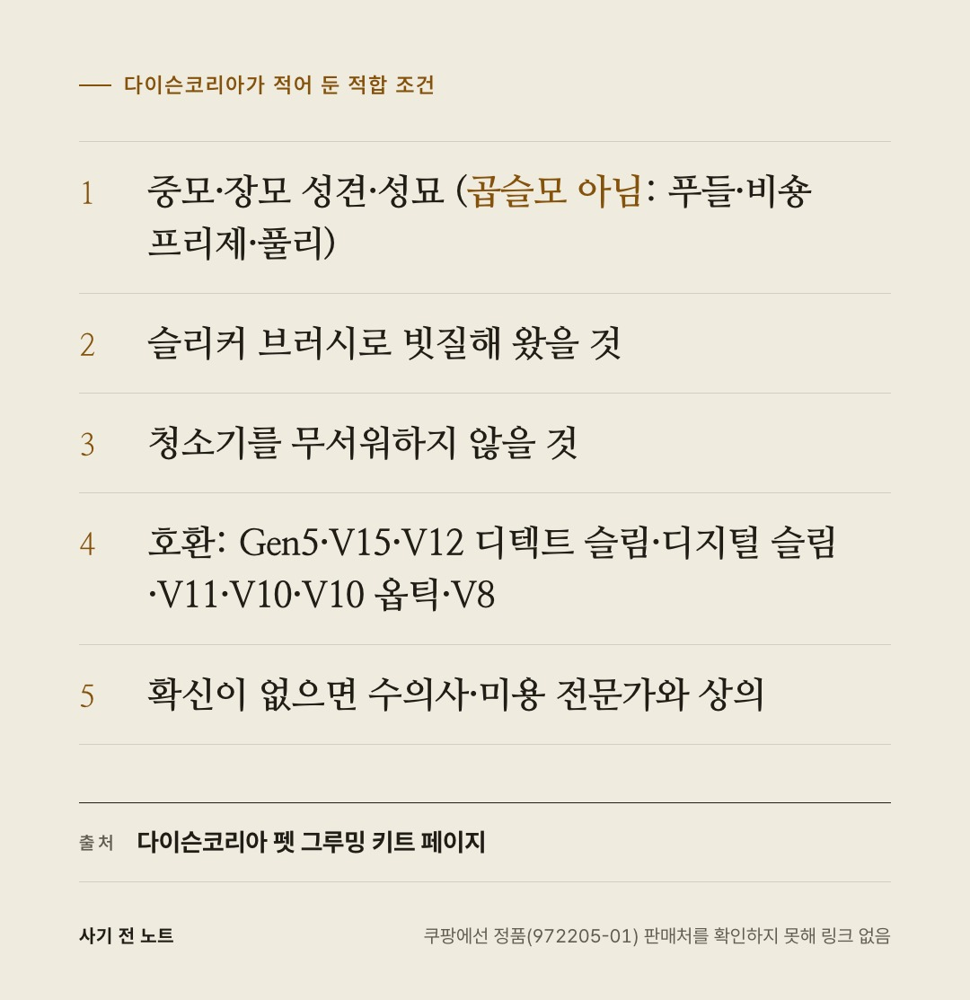

이 게시물은 쿠팡 파트너스 활동의 일환으로, 이에 따른 일정액의 수수료를 제공받습니다.
고양이털흡입기, 다이슨 키트가 안 맞는 집이라면 S1 Pro
다이슨 청소기가 없거나, 고양이가 다이슨 키트 조건에 하나라도 걸린다면 청소기 없이 혼자 도는 진공 미용기가 답입니다. 니카사 S1 Pro는 빗질하는 동안 흡입을 멈춰 두었다가 버튼 한 번에 빗에 모인 털을 빨아들여요. 먼지통 3L, 흡입력 11,000Pa(펫츠놀로지 국내 상세). 빗에 모인 털이 그대로 먼지통으로 가는 구조죠.
다이슨 없이 빗질과 흡입을 한 번에, 니카사 S1 Pro 쿠팡 판매 페이지(11월 13일 128,000원)

다이슨 키트는 고양이를 가립니다
다이슨 펫 그루밍 키트는 연장 호스로 청소기에 이어 빗질하고, 엄지를 떼면 털이 먼지통으로 가는 방식이에요. 그런데 공식몰이 적은 조건이 꽤 좁습니다. 곱슬모가 아닌 중모·장모 성묘, 슬리커 브러시에 익숙할 것, 청소기를 무서워하지 않을 것.

내 다이슨이 호환 목록에 없다면 다이슨코리아에 먼저 묻는 편이 안전해요. 키트 정품(972205-01)은 쿠팡에 '호환'·재판매 상품만 섞여 나와 링크하지 않았습니다.
S1 Pro는 바리깡에 3~18mm 가이드 빗 6종이 붙습니다. 구성 표기는 국내 판매처 8종, 해외 공식몰 7종으로 달라서 받을 구성은 판매자에게 물어 두세요. 11월 13일 쿠팡 상품평은 48개였어요.
소리에 예민한 고양이라면
dB를 적은 곳은 니카사뿐이었어요. 국내 상세 48dB(트리머 작동 시), 해외 공식몰 50dB. 해외 공식몰엔 흡입 버튼을 누를 때만 팬이 돈다고 적혀 있어서, 빗질하는 동안엔 팬이 쉬는 셈입니다. 다이슨은 흡입을 중간 단계로 쓰라고만 해요.
털이 고양이 몸이 아니라 소파에 있다면
질문이 다를 수도 있습니다. 소파·침대 천에 박힌 털이 고민이면 미용기가 아니라 핸디 청소기. 샤크 에보파워 EX 핸디 WV270KR은 0.6kg, 일반 모드 약 15분, 멀티 툴이 좁은 패브릭의 털·보풀용으로 나와 있어요. 11월 13일 쿠팡 상품평 731개.
천에 붙은 털 쪽이라면, 샤크 에보파워 EX 핸디 WV270KR(11월 13일 쿠팡 165,900원)
다만 고양이 몸에 대는 물건은 아닙니다. 설명서는 흡입구를 모발·얼굴 가까이 대지 말라고 하거든요. 소파용으로 고양이 빗질까지 하려 하면 헛돈이 되기 쉬워요.

세 제품 모두 털과 필터가 완전히 마른 상태가 전제입니다. 고양이에게 직접 써 본 것은 아니어서, 기능은 각 회사 공식몰·설명서(11월 7일 확인), 가격·상품평 수는 11월 13일 쿠팡 표시값에서 옮겼어요. 곱슬모거나 내 다이슨이 목록에 없다면, 키트를 찾기보다 3L 먼지통 쪽부터 보면 됩니다.
공식 페이지 모음
- 펫츠놀로지 니카사 S1 Pro 상세: https://www.petsnology.co.kr/s1pro
- 니카사 공식몰 S1 Pro: https://neakasa.com/products/neakasa-s1-pro-pet-grooming-vacuum
- 다이슨코리아 펫 그루밍 키트: https://www.dyson.co.kr/pet-grooming-kit
- 샤크닌자코리아 에보파워 EX 핸디 WV270KR: https://www.sharkninja.co.kr/product/샤크-무선청소기-에보파워-핸디-wv270kr-부스트모드-멀티-클리닝-툴-포함/23/
#고양이털흡입기 #고양이털청소 #펫그루밍 #다이슨펫그루밍키트 #샤크핸디청소기